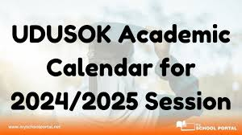

Latest Academic Calendar Updates
Published on January 3, 2025
The university has recently updated its academic calendar, with new dates for resumption, exams, and holidays. The updated calendar includes important dates such as registration deadlines, public holidays, and exam schedules. Students are advised to review the new calendar to ensure they do not miss key academic events. The university hopes that the new schedule will help students plan their academic activities better, avoiding conflicts and ensuring a smooth academic year.
Back to News